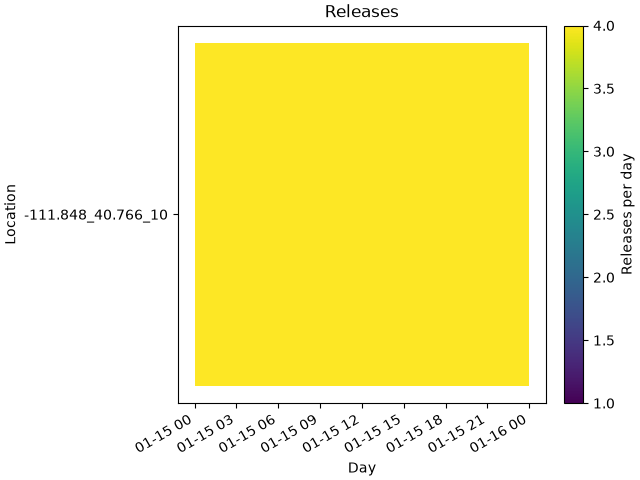
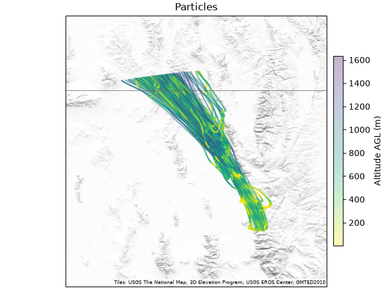

Reading And Plotting Particles#
Each simulation’s result is its particles: where every particle was at every output step, one Parquet file per simulation in the output directory. You can read them for one simulation, for many at once, or with other tools without runtraj. We plot a few simulations first, because a map shows at a glance whether the air went where you expect, and only then load many for analysis.
The examples on this page that run use a small sample project: four
releases an hour apart on the morning of 15 January 2021 at one site in Salt
Lake City, 24-hour backward runs with 100 particles, and one variant,
hrrr.
One simulation#
Open the project, pick a simulation by its release id and variant, and read its particles:
In [1]: import runtraj
In [2]: project = runtraj.Project("./my_project")
In [3]: sim = project.simulation("202101150800_-111.848_40.766_10", "hrrr")
In [4]: sim.has_particles # True once the particle file exists
Out[4]: True
In [5]: particles = sim.particles # raises FileNotFoundError before that
In [6]: particles.head()
Out[6]:
age particle lon ... mlht pres time
0 -1.0 1.0 -111.8473 ... 150.0 859.37 2021-01-15 07:59:00
1 -1.0 2.0 -111.8473 ... 150.0 859.12 2021-01-15 07:59:00
2 -1.0 3.0 -111.8474 ... 150.0 859.34 2021-01-15 07:59:00
3 -1.0 4.0 -111.8473 ... 150.0 858.78 2021-01-15 07:59:00
4 -1.0 5.0 -111.8473 ... 150.0 859.09 2021-01-15 07:59:00
[5 rows x 21 columns]
sim.particles is a pandas DataFrame with one row per particle per output
step. The columns you are most likely to use:
Column |
Meaning |
|---|---|
|
Particle number, from 1 to |
|
Minutes since release, negative for a backward run (HYSPLIT’s
|
|
Time of the row, UTC, built from |
|
Longitude and latitude (HYSPLIT’s |
|
Height above ground, m |
|
The met variables HYSPLIT writes beside each position, the ones
listed in its |
The Particle Table lists every column with its units.
Plots#
runtraj’s methods for a particle table are under particles.runtraj.
Plotting needs the visualization extra; with cartopy installed, maps
also show coastlines and state borders.
In [7]: particles.runtraj.plot.map(release=sim.release); # every position, by age

color_by="zagl" colors the particles by height instead. Two more plots
help before a batch: sim.release.plot.map() shows where a release is, and
project.plot.availability() the days each location has releases.
In [8]: project.plot.availability();


A map takes a tiler, any cartopy tiler, to draw map tiles under the
data. The maps on these pages are drawn on shaded-relief tiles of the USGS
National Map. cartopy downloads them when the map is drawn, and
cache=True keeps what it downloaded:
from cartopy.io.img_tiles import GoogleTiles
usgs = GoogleTiles(
url="https://basemap.nationalmap.gov/arcgis/rest/services/USGSShadedReliefOnly/MapServer/tile/{z}/{y}/{x}",
cache=True,
)
particles.runtraj.plot.map(tiler=usgs)
Where the particles ended#
particles.runtraj.endpoints() gives the last row of each particle: for
a backward run, where the air was at the start of the run; for a forward
run, where it went. A study that samples a background value there needs a
run long enough for the particles to leave the region of its sources
(Choosing Settings):
In [9]: ends = particles.runtraj.endpoints()
In [10]: ends[["particle", "age", "lon", "lat", "zagl"]].describe()
Out[10]:
particle age lon lat zagl
count 100.000000 100.000000 100.000000 100.000000 100.000000
mean 50.500000 -518.620000 -112.606935 42.137872 797.238494
std 29.011492 150.853048 0.163699 0.020341 319.659445
min 1.000000 -1031.000000 -113.000100 42.090200 157.438400
25% 25.750000 -615.000000 -112.700625 42.126475 583.699200
50% 50.500000 -477.500000 -112.608650 42.138350 795.512700
75% 75.250000 -407.250000 -112.512775 42.150375 971.123800
max 100.000000 -304.000000 -111.931800 42.218100 1775.547900
particles.runtraj.grid_exits(bounds) gives where each particle first left
a Bounds box, such as the edge of your study area.
Weighting the particles#
A particle carries no mass, so a species that is lost on the way, or a
column measurement that counts some heights more than others, is handled by
weighting each row of the particles. A transform multiplies the weight
column, which starts at 1, by the fraction that counts: here, the fraction
of a tracer with a 24-hour lifetime that survives to the release.
In [11]: from runtraj.transforms import FirstOrderLifetime, apply_transforms
In [12]: weighted = apply_transforms(particles, [FirstOrderLifetime(lifetime_hours=24)])
In [13]: weighted.groupby(weighted.age // 60)["weight"].mean().tail()
Out[13]:
age
-5.0 0.828801
-4.0 0.864064
-3.0 0.900827
-2.0 0.939155
-1.0 0.979113
Name: weight, dtype: float64
The built-in transforms are an averaging kernel and pressure weighting for a column measurement, a first-order lifetime, dry deposition, and oxidation; Transforms and Sampling lists their settings. A stage applies the transforms its settings list when it reads the particles, so the weights are not stored in a particle file.
Many simulations at once#
project.simulations is a table with one row per release under each
variant. Its columns are release and variant, realization (0
to N - 1 for a variant with realizations: N, empty for one that runs
once), model, the release’s time, kind and location, and any
columns of your own in releases.csv, such as a site name:
In [14]: sims = project.simulations
In [15]: sims
Out[15]:
release variant ... kind location
0 202101150600_-111.848_40.766_10 hrrr ... point -111.848_40.766_10
1 202101150700_-111.848_40.766_10 hrrr ... point -111.848_40.766_10
2 202101150800_-111.848_40.766_10 hrrr ... point -111.848_40.766_10
3 202101150900_-111.848_40.766_10 hrrr ... point -111.848_40.766_10
[4 rows x 7 columns]
Select rows the way you would in pandas, then hand the selection to the project:
In [16]: morning = sims[
....: (sims.variant == "hrrr")
....: & sims.time.between("2021-01-15 06:00", "2021-01-15 07:00") # both ends included
....: ]
....:
In [17]: both = project.particles(morning) # one table, with release and variant columns
In [18]: both.groupby("release")["particle"].nunique()
Out[18]:
release
202101150600_-111.848_40.766_10 100
202101150700_-111.848_40.766_10 100
Name: particle, dtype: int64
In [19]: both.runtraj.plot.map(color_by="zagl"); # every position of both


Leave the selection out to load every simulation. Any table with
release and variant columns works as a selection, such as your
observations merged with sims, and so does a boolean mask over
project.simulations. A simulation whose particles do not exist yet is
left out. columns=["particle", "age", "lon", "lat"] reads only those
columns, which is faster and takes less memory.
Particle numbers start again in each simulation, so in such a table a
trajectory is its release, variant and realization as well as
its particle. endpoints(), grid_exits() and the transforms read
it that way: each simulation is handled as if it were alone.
In [20]: both.runtraj.endpoints().groupby("release").size()
Out[20]:
release
202101150600_-111.848_40.766_10 100
202101150700_-111.848_40.766_10 100
dtype: int64
Your own columns of releases.csv select one site or one campaign. With
a site column and an ensemble variant named hrrr-ens:
site = sims[(sims.variant == "hrrr") & (sims.site == "tower-1")]
ensemble = sims[sims.variant == "hrrr-ens"] # every realization of every release
To work with each simulation of a selection, look it up by its row:
In [21]: for release, variant in morning[["release", "variant"]].itertuples(index=False):
....: sim = project.simulation(release, variant)
....: print(sim, len(sim.particles))
....:
202101150600_-111.848_40.766_10/hrrr 41370
202101150700_-111.848_40.766_10/hrrr 43853
A run of 1000 particles over 24 hours is about 1.4 million rows, some 250 MB
in memory, so project.particles suits a selection of tens of
simulations. For thousands, read the particles/ tree with DuckDB or
pyarrow (below). sim.particles_path is where one file is.
In other tools#
DuckDB, R and other languages#
The output directory is a set of Parquet files in folders named
settings=... and date=..., which pyarrow, polars, R’s arrow and
DuckDB read as columns. Each file also has a
release column. With DuckDB, from Python, R,
or its own shell, a question about thousands of simulations is one query:
-- simulations per settings folder and day
SELECT settings, date, count(DISTINCT release) AS simulations
FROM read_parquet('output/particles/*/*/*.parquet', hive_partitioning = true)
GROUP BY settings, date
ORDER BY settings, date;
-- where each particle of one day's releases ended up
SELECT release, particle, arg_max(lon, abs(age)) AS lon, arg_max(lat, abs(age)) AS lat
FROM read_parquet('output/particles/settings=hrrr-a3f9c2/date=2021-01-15/*.parquet', hive_partitioning = true)
GROUP BY release, particle;
-- the time of each row, UTC: the release id starts with the release time
SELECT *, strptime(left(release, 12), '%Y%m%d%H%M') + to_minutes(age::INTEGER) AS time
FROM read_parquet('output/particles/settings=hrrr-a3f9c2/date=2021-01-15/*.parquet');
In R, the arrow package opens the same tree:
library(arrow)
particles <- open_dataset("output/particles") # settings and date are columns
A file stores no time; age is minutes from the release time, which
the release id begins with and the file’s metadata holds. An ensemble’s folders have a realization=k
level as well, so its files are one folder deeper (*/*/*/*.parquet)
and realization is a column. Output Layout describes every
file and metadata key, for a reader in another language.
One file without a project#
runtraj.read_particles() reads one particle file, and
runtraj.particles.particles_metadata() what it records:
path = (
"output/particles/settings=hrrr-a3f9c2/date=2021-01-15/"
"202101150800_-111.848_40.766_10.parquet"
)
particles = runtraj.read_particles(path)
meta = runtraj.particles.particles_metadata(path)
meta.release, meta.settings, meta.met_files, meta.realization
The file holds its release, the met files the run read, and the settings it
ran with, the same ones as its folder’s _settings.yaml. realization
is which realization of an ensemble the file is, or None for a single
run.
As CF trajectories#
particles.runtraj.to_cf_trajectories() returns the particles as an
xarray.Dataset that follows the CF-1.10 conventions for
trajectories, which trajan,
cf-xarray, and other tools that read CF trajectory files open. Each particle
is one trajectory, with dimensions (trajectory, obs). The coordinates
are trajectory (the particle number), time (UTC), lon, lat
and zagl; age and every other numeric column are data variables. A
particle that leaves the meteorology domain early is padded with missing
values. Write it with xarray.Dataset.to_netcdf():
import trajan # registers ds.traj
import xarray as xr
particles.runtraj.to_cf_trajectories().to_netcdf("trajectories.nc")
ds = xr.open_dataset("trajectories.nc", decode_timedelta=False)
ds.traj.plot()
decode_timedelta=False keeps age in minutes rather than reading it
as a duration. A table with several realizations is refused: select one
first, particles[particles.realization == k]. The particles of
runtraj.run_trajectories() convert the same way.
When the particles look wrong, Checking A Run lists what to check, in order.